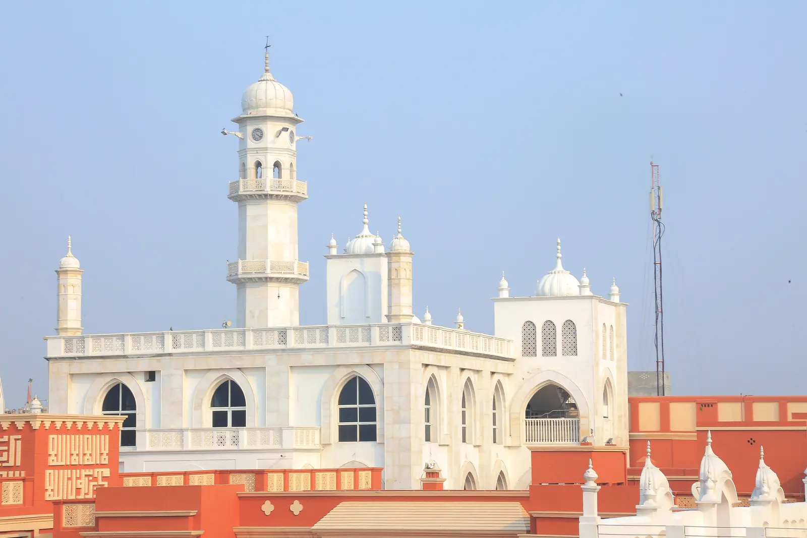

Chapter 12 of 22
Exploring Qadian: Fajr and Darul Masih
Wednesday, November 27, 2024 · Part I

We only managed to sleep a few hours before it was time to wake up for Fajr prayers. The morning air in Qadian was cooler than expected, but for those of us used to Buffalo winters, it felt refreshingly mild. None of us were entirely sure where Masjid Mubarak was, so we followed the illuminated Minarat-ul-Masih and the flow of worshippers who seemed familiar with the path.
After prayers, we returned to Sara-i-Waseem, where a delightful breakfast awaited us. The dining hall buzzed with anticipation as we discussed the day’s itinerary. Time was of the essence; we quickly prepared and assembled in the lobby by 9:15 a.m.
Preparing for the Day
The morning commenced with Mirza Harris delivering a heartfelt address on the significance of our journey and the spiritual essence of Qadian. He reminded us of the prophecy revealed to Hazrat Mirza Ghulam Ahmad (as): “Kings shall seek blessings from thy garments.” This profound revelation underscored the honor and reverence destined for the Promised Messiah (as), even from the highest echelons of society.
As we prepared to visit Darul Masih, the very heart of his mission, this prophecy deepened our sense of awe and responsibility.
Nabeel Mirza then outlined the day’s schedule, ensuring clarity on the forthcoming activities. Imam Abdullah Dibba Sahib added motivational insights, urging us to focus on personal spiritual growth—offering additional nawafil (voluntary prayers), immersing ourselves in the historical context of the sites, and dedicating ourselves to worship.
Punctually at 9:30 a.m., our guide, Naseer Haq Sahib, a murrabi from the Ammore Kharja department in Qadian, arrived. With all preparations complete, we embarked on our walk to Darul Masih, a site we had only briefly encountered during Fajr.
Darul Masih: The Abode of the Messiah
Darul Masih, translating to “The Abode of the Messiah,” is an expansive complex encompassing the residence of the Promised Messiah (as), his brother Mirza Ghulam Qadir’s house, the homes of his children, Masjid Aqsa, Masjid Mubarak, and more. These structures are intricately connected through walls, corridors, windows, and narrow alleyways, creating a labyrinthine layout. A central security gate serves as the primary point of entry and exit, unifying this spiritually and historically significant site.
In 2005, following the visit of Hazrat Mirza Masroor Ahmad (atba), the current Khalifa, Darul Masih underwent renovations to preserve its traditional aesthetic while incorporating modern enhancements. The walls were refurbished using red-colored concrete, closely resembling the traditional red bricks or clay of the region. Doors and windows were painted in a dark, semi-gloss finish, creating a striking contrast against the earthy red tones.
This renovation aligns with a divine revelation received by the Promised Messiah (as), instructing him to “broaden his house,” signifying the anticipation of numerous visitors and the continual expansion of his abode.
Minarat-ul-Masih and Masjid Aqsa
Dominating the complex is Minarat-ul-Masih, a symbol of the Promised Messiah’s mission. Adjacent to it lies the grave of Hazrat Mirza Ghulam Murtaza, the father of the Promised Messiah (as), situated within Masjid Aqsa. This proximity signifies the deep familial and spiritual bonds that influenced Hazrat Mirza Ghulam Ahmad’s (as) mission.
The Two Wells
- The First Well: Located in the courtyard of Mirza Ghulam Qadir’s house, originally the residence of Hazrat Mirza Ghulam Murtaza, this well served as the primary water source for the family.
- The Second Well: Due to difficulties faced by Hazrat Mirza Ghulam Ahmad’s (as) family in accessing water from the original well, the Promised Messiah (as) commissioned a second well near his own residence. This well catered not only to his household but also to the numerous guests who visited him.
Residences of the Promised Messiah’s Family
Darul Masih encompasses the homes of the Promised Messiah’s (as) children, each contributing significantly to the early history of Ahmadiyyat:
- Mirza Sultan Ahmad’s House: The eldest son of the Promised Messiah (as), Mirza Sultan Ahmad, resided within Darul Masih.
- Mirza Fazal Ahmad’s House: Another prominent family residence, reflecting a legacy of service to Islam.
- Hazrat Mirza Bashir-ud-Din Mahmood Ahmad’s House (The Second Khalifa)
- Hazrat Mirza Bashir Ahmad’s House
- Hazrat Mirza Sharif Ahmad’s House
Collectively, these homes narrate the family’s unwavering dedication to the Promised Messiah’s (as) mission.
Baitul Fikr and Bait-ud-Dua
A notable feature of Darul Masih is Baitul Fikr, a chamber constructed by the Promised Messiah (as) for secluded worship and deep contemplation. Attached to this chamber is Bait-ud-Dua, an annex designated for solitary prayers. These spaces underscore the Promised Messiah’s (as) profound commitment to his personal relationship with Allah.
Baitul Fikr also connects directly to Masjid Mubarak through a window. The Promised Messiah (as) would often use this window to enter the mosque and lead prayers, exemplifying the seamless integration of personal devotion and communal worship.
A divine revelation assured the Promised Messiah (as): “Whosoever is within the house, Allah will protect them and give them peace.” This promise manifests even today, as many of us felt a profound sense of tranquility within the sacred precincts of Darul Masih.
Reflections on Darul Masih
It is difficult to fully encompass everything we saw and felt while touring Darul Masih. Writing about it feels like trying to describe colors to someone who cannot see. Every corner of this campus carries immense historical and spiritual significance, and words simply cannot do it justice.
This experience reminded me of the blessings of seeing such sacred places with our own eyes. We should all endeavor to return here to witness it for ourselves. This visit is not just a historical exploration but a spiritual connection to the legacy of Hazrat Mirza Ghulam Ahmad (as) and his family, who dedicated their lives to the service of Allah and humanity.